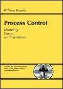

| [ Team LiB ] |
|
|  | |
| • | Table of Contents |
| Process Control: Modeling, Design, and Simulation | ||
| By B. Wayne Bequette | ||
| Publisher | : Prentice Hall PTR | |
| Pub Date | : December 26, 2002 | |
| ISBN | : 0-13-353640-8 | |
| Pages | : 769 | |
Master process control hands on, through practical examples and MATLAB(R) simulations
This is the first complete introduction to process control that fully integrates software tools—enabling professionals and students to master critical techniques hands on, through computer simulations based on the popular MATLAB environment. Process Control: Modeling, Design, and Simulation teaches the field's most important techniques, behaviors, and control problems through practical examples, supplemented by extensive exercises—with detailed derivations, relevant software files, and additional techniques available on a companion Web site. Coverage includes:
Fundamentals of process control and instrumentation, including objectives, variables, and block diagrams
Methodologies for developing dynamic models of chemical processes
Dynamic behavior of linear systems: state space models, transfer function-based models, and more
Feedback control; proportional, integral, and derivative (PID) controllers; and closed-loop stability analysis
Frequency response analysis techniques for evaluating the robustness of control systems
Improving control loop performance: internal model control (IMC), automatic tuning, gain scheduling, and enhancements to improve disturbance rejection
Split-range, selective, and override strategies for switching among inputs or outputs
Control loop interactions and multivariable controllers
An introduction to model predictive control (MPC)
Bequette walks step by step through the development of control instrumentation diagrams for an entire chemical process, reviewing common control strategies for individual unit operations, then discussing strategies for integrated systems. The book also includes 16 learning modules demonstrating how to use MATLAB and SIMULINK to solve several key control problems, ranging from robustness analyses to biochemical reactors, biomedical problems to multivariable control.
| [ Team LiB ] |
|